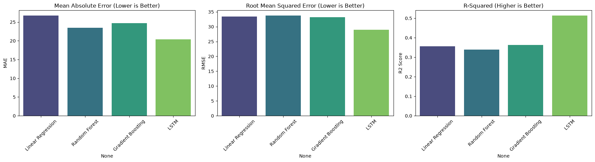
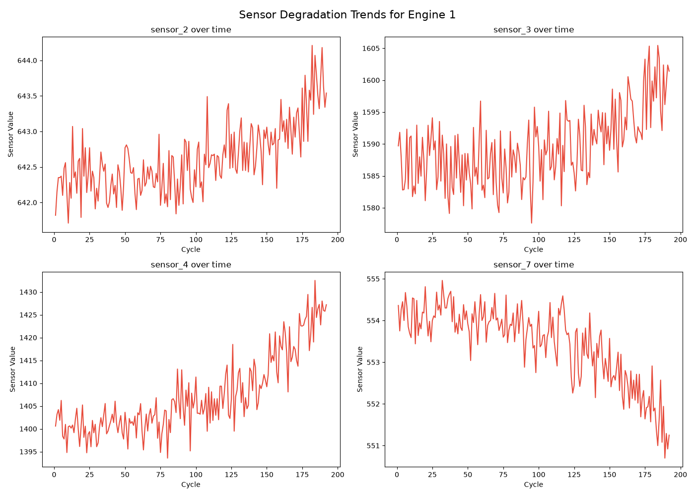

Prognostic Machine Learning & Sequential Deep Learning on Multi-Channel Turbofan Telemetry to Prevent Catastrophic Industrial Machine Failures.
Moving from reactive and scheduled maintenance to proactive, condition-based intelligence
RUL = Cycle_failure - Cycle_current).Comprehensive multi-channel thermodynamics from healthy operation through failure
Transforming raw thermodynamic readings into stable, trend-aware prognostic features
StandardScaler is fitted strictly on the training partition only. Test engine data is only transformed using frozen train statistics.Evaluating baseline regression, non-linear ensembles, and temporal recurrent networks
Temporal Deep Learning (LSTM) outperforms standard tabular models across all metrics
| Model Architecture | MAE ↓ | RMSE ↓ | R² Score ↑ |
|---|---|---|---|
| Linear Regression (Baseline) | 26.78 | 33.36 | 0.3556 |
| Random Forest Regressor | 23.47 | 33.80 | 0.3385 |
| Gradient Boosting (XGBoost) | 24.65 | 33.06 | 0.3670 |
| PyTorch LSTM (Deep Learning) | 21.63 | 31.19 | 0.4365 |

Tracking thermodynamic deviations as internal engine components wear out

Containerized Docker deployment providing real-time fleet simulation and CSV ingestion
Answers to fundamental machine learning, prognostics, and architectural questions
t depends on cumulative mechanical fatigue over past cycles. LSTMs retain memory over sliding windows.Successful end-to-end implementation fulfilling all academic and industrial criteria